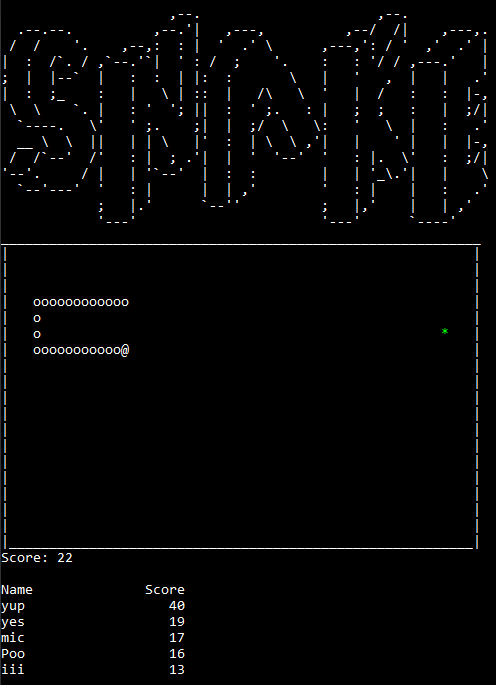

Simple version of the game of the classic game of snake built using C++.
I made this project while taking Object Oriented Programming C++ at DVC.
This project was the final project for the couse and compiled everything we learned into one program.
The game includes all basic features from the classic game of snake excluding faster movement based on snake length.
It also features object oriented design, a scoreboard that uses random access files, operator overloading, and gamespeed tied to time rather than frames.
The game is outputed to the console and each frame uses cout to output to the console. To update the screen the console is cleared and the updated screen is outputed.